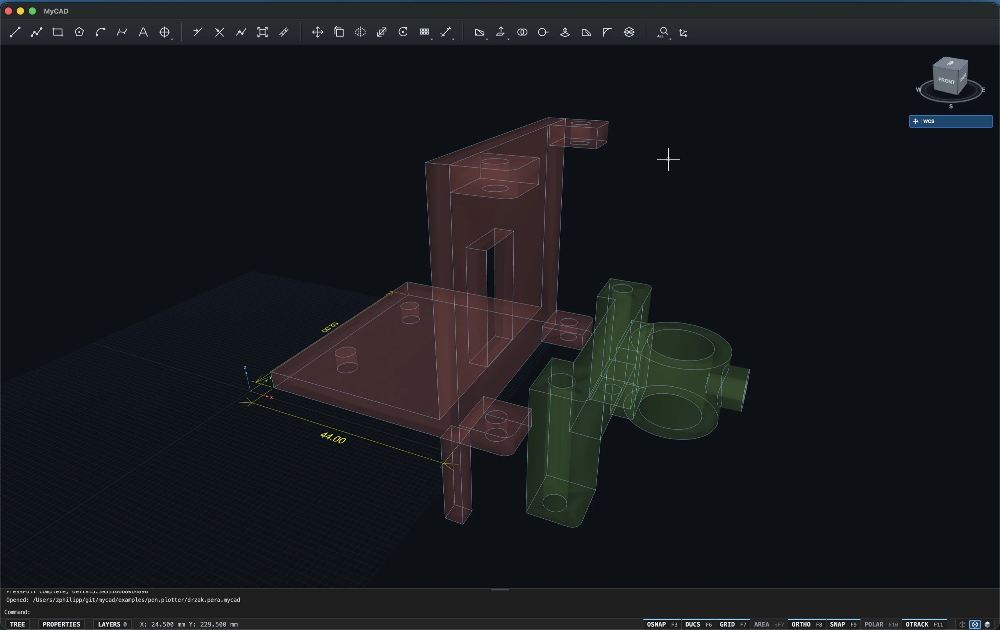

Vyřešte skutečný problém
Navrhněte adaptér, držák nebo přípravek přesně pro prostor a zařízení, které máte.
MyCAD / CAD → výroba
Navrhněte držák, přípravek, mechanismus nebo náhradní součást. MyCAD spojuje přesné 2D kreslení, skutečné 3D modelování a výstup pro další výrobu v jednom pracovním prostoru.
Desktopová aplikace pro macOS · aktivně ve vývoji

WORKSPACE Model
OSNAP F3
DUCS F6
GRID F7
AREA ⇧F7
ORTHO F8
SNAP F9
POLAR F10
OTRACK F11
Proč MyCAD
Technické tvoření je svoboda změnit rozměr, opravit slabé místo nebo postavit řešení, které před vámi neexistovalo. MyCAD vzniká proto, aby cesta od nápadu k přesné geometrii nebyla vyhrazena jen velkým konstrukčním týmům.
Navrhněte adaptér, držák nebo přípravek přesně pro prostor a zařízení, které máte.
Kóty, object snap, UCS a modelový strom udrží geometrii čitelnou i při změnách.
Pokračujte přes DXF, vybraný STL nebo G-code k 3D tisku, plotru či dalšímu stroji.
Schopnosti dnešního buildu
MyCAD už pokrývá souvislý pracovní postup: od přesného výkresu přes objemový model až po soubor, se kterým můžete pokračovat ve výrobě.
Čáry, polylinie, kružnice, elipsy, oblouky, Bézierovy křivky, text i kóty. Geometrii upravíte pomocí OFFSET, TRIM, EXTEND, JOIN, MOVE, COPY, MIRROR, SCALE, ROTATE a polí.
Začněte kvádrem, válcem, koulí, kuželem, jehlanem, torusem nebo vlastním profilem. Pokračujte přes EXTRUDE, SWEEP a PRESSPULL až k hotové objemové geometrii.
Uložte celý projekt, předejte 2D geometrii jako DXF, exportujte jen vybraná 3D tělesa do STL nebo vytvořte G-code pro pero a jednoduché řezací workflow.
Ovládání, které dává smysl
Příkazová řádka, klávesové zkratky, kumulativní výběr, modré a zelené výběrové okno, OSNAP i ortho. MyCAD respektuje pracovní návyky z klasických CAD systémů, takže můžete přemýšlet nad modelem místo nad rozhraním.
Command: _EXTRUDE
2 profile(s) preselected. Enter extrusion height.
Specify height: 24
Extrude complete.
Command: _FILLET
Select solid edge:
Radius <3.00>: ↵
Command:
Jeden souvislý pracovní postup
Nakreslete profil od nuly nebo otevřete existující ASCII DXF.
Vytáhněte více profilů, spojte tělesa a vytvořte otvory, kapsy i zaoblení.
Otočte pohled, zapněte X-ray, pracujte v novém UCS a sledujte modelový strom.
Vyberte přesně to, co chcete exportovat, a pokračujte přes DXF, STL nebo G-code.
Pro koho MyCAD vzniká
Rychlý návrh dílu, kontrola rozměrů a výměna 2D geometrie bez zbytečně těžkého prostředí.
Držáky, adaptéry, přípravky, plotry a prototypy od prvního náčrtu až po data pro výrobu.
Praktický vstup do technického kreslení, souřadných systémů a prostorového modelování.
MyCAD pro macOS
MyCAD je aktivně vyvíjený projekt. Zanechte e-mail a dáme vám vědět, jakmile bude první veřejná verze připravená k vyzkoušení.